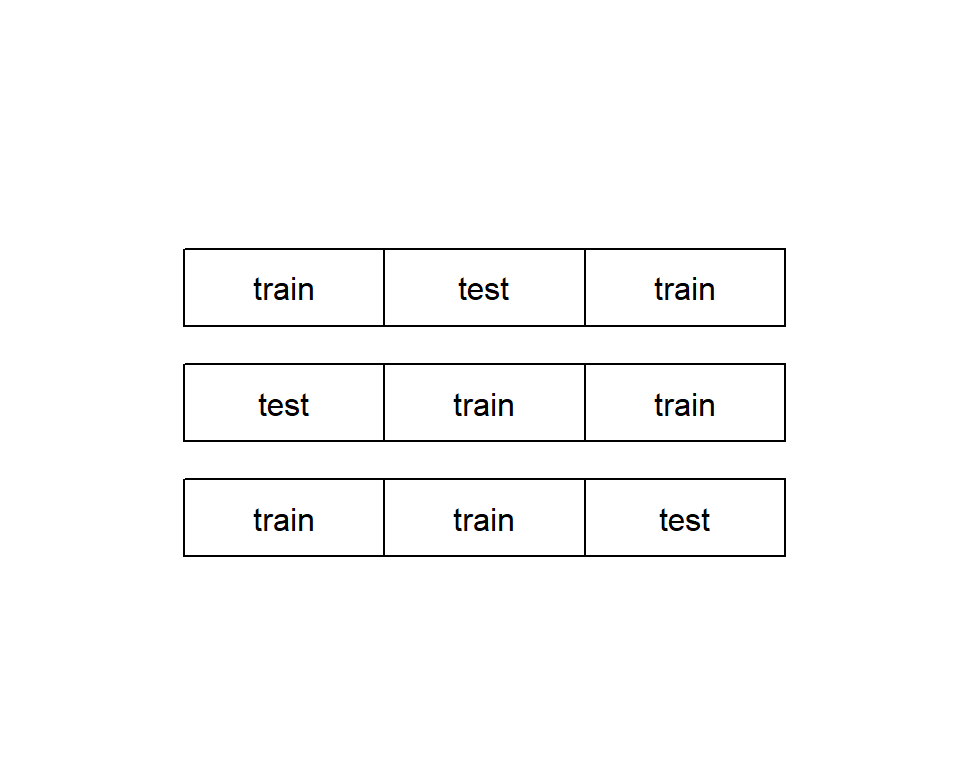
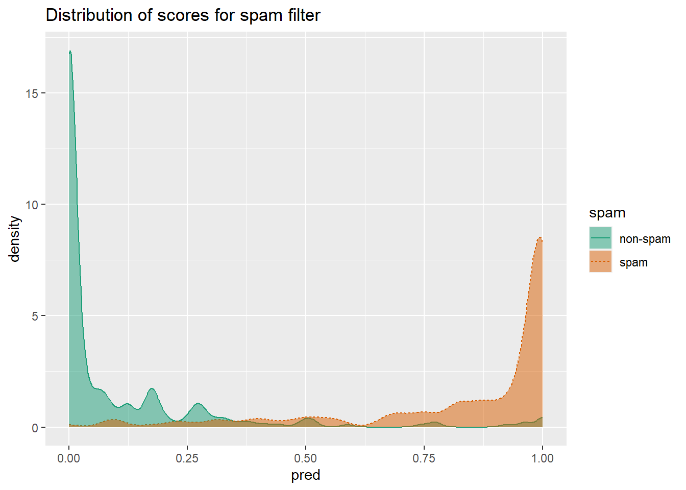
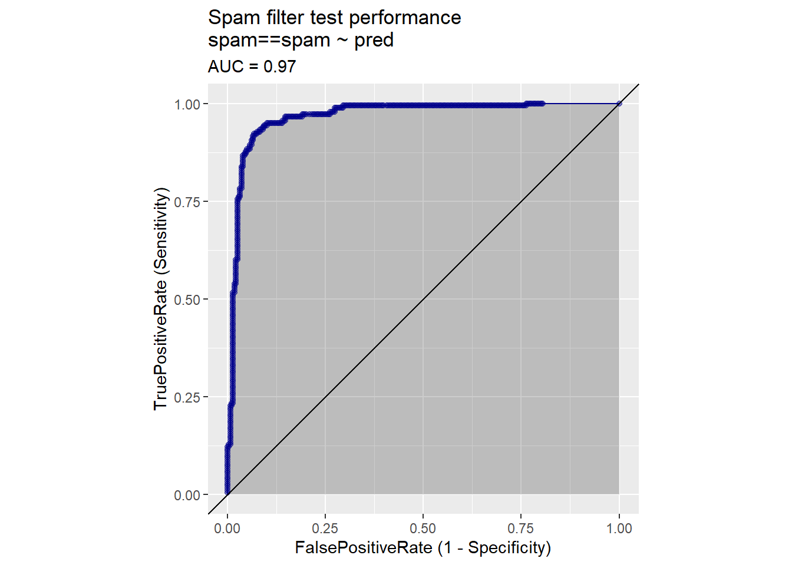
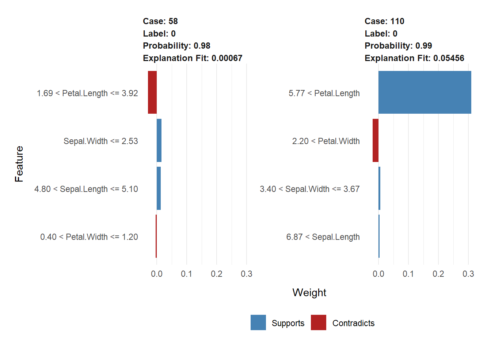

The model you end up choosing very much depends on the use of the model and the data. Typical problems that data scientists attempt to solve could be distinguished into these groups:
Classification is data categorization based on product attributes and/or text descriptions. classification is deciding how to assign (known) labels to an object. It is an example of what is called supervised learning: in order to learn how to classify objects, you need a dataset of objects that have already been classified (called the training set).
Regression or scoring is predicting the increase/decrease in dependent variable from a particular set of independent/explanatory variables. A regression model maps the different factors being measured into a numerical value: how much an increase in x is predicted to increase y from some baseline. Predicting the probability of an event (like belonging to a given class - say becoming unemployed) can also be considered scoring.
Classification and regression/scoring require that you have a training dataset of situations with known outcomes that you use to feed the model. However, in some situations, there is not (yet) a specific outcome that you want to predict. Instead, you may be searching for patterns and relationships in your data that will help you understand about how it all relates: for example, what products people buy together.
These situations lead to approaches called unsupervised learning: rather than predicting outputs based on inputs, the objective of unsupervised learning is to discover similarities and relationships in the data. Some common unsupervised tasks include:
In everyday language, we tend to use the terms prediction and forecast interchangeably. Technically, to predict is to pick an outcome, such as “It will rain tomorrow,” and to forecast is to assign a probability: “There’s an 80% chance it will rain tomorrow.” That’s a big difference!
Being able to estimate how well your model performs with new data is very important. To evaluate the future model performance we split our data to two parts: training and test data. We use training data to feed the model during model development while test data is intended to inform us how will the model perform on new data.
An overfit model is a model that looks great on the training data but performs poorly on new data. What happens is that we train the model to much to fit the training data. In this case, the training error (a model’s prediction error on the data that it trained from) is going to be significantly smaller than generalation error (a model’s prediction error on new data). Not good! For a good model, the two errors should be similar. To avoid letting your model memorize the training data instead of learning generalizable rules, we should prefer simpler models which do in fact tend to generalize better.
Not splitting your data allows you to use more data to train and evaluate your model. However, you cannot should not evaluate the model on the data it has seen during its construction. When test data was used in training, we can expect an optimistic measurement bias. To avoid this, it is recommended to split your data into test and training data. Then, do all the modeling using the training data and only measuring the performance of your model using the test data at the very end.
If you split your data into training and test partitions, you may ask how should you split it. You want to balance the trade-off between keeping enough data to fit a good model, and having enough data to make good estimates of the model’s performance. Common splits are:
In some cases, your data set is too small to be split. In this case, you can use a a more thorough partitioning scheme called k-fold cross-validation. The idea is to create multiple different subsets of training data and test data. In each case, make sure that they do not overlap. For example, data can be split into three non-overlapping partions, and the three partitions are arranged to form three test-train splits. For each split, a model is trained on the training set and then applied to the corresponding test set. See figure below.

A classification model is type of model that places examples into one of two or more categories. To measure classifier performance, we first must introduce a useful tool called the confusion matrix. It is the absolute most interesting summary of classifier performance. Confusion matrix is just a simple table that summarizes the classifier’s predictions against the actual known data categories.
See example using data on spam email below.
spamD <- read.table('R_data_files/spamD.tsv',header=T,sep='\t')
spamTrain <- subset(spamD,spamD$rgroup >= 10)
spamTest <- subset(spamD,spamD$rgroup < 10)
spamVars <- setdiff(colnames(spamD), list('rgroup','spam'))
spamFormula <- as.formula(paste('spam == "spam"',
paste(spamVars, collapse = ' + '),sep = ' ~ '))
spamModel <- glm(spamFormula,family = binomial(link = 'logit'),
data = spamTrain)
spamTrain$pred <- predict(spamModel,newdata = spamTrain, type = 'response')
spamTest$pred <- predict(spamModel,newdata = spamTest, type = 'response')
sample <- spamTest[c(7,35,224,327), c('spam','pred')]
print(sample)## spam pred
## 115 spam 0.9903246227
## 361 spam 0.4800498077
## 2300 non-spam 0.0006846551
## 3428 non-spam 0.0001434345confmat_spam <- table(truth = spamTest$spam,
prediction = ifelse(spamTest$pred > 0.5,
"spam", "non-spam"))
print(confmat_spam)## prediction
## truth non-spam spam
## non-spam 264 14
## spam 22 158The confusion matrix is a table counting how often each combination of known outcomes (the truth) occurred in combination with each prediction type. For this example, 264 emails were correctly predicted to not be spam (true negatives), 158 were correctly identified as spam (trues positives), 14 were identified as spam even though they were not (false positives), and 22 were predicted to not be spam when in fact they were (false negatives).
Accuracy answers the question: “When the spam filter says this email is or is not spam, what’s the probability that it’s correct?”. Accuracy is defined as the number of items categorized correctly divided by the total number of items. That is done below.
Accuracy = (confmat_spam[1,1] + confmat_spam[2,2]) / sum(confmat_spam)
Accuracy_error = 1 - Accuracy
print(c(Accuracy,Accuracy_error))## [1] 0.92139738 0.07860262The error of around 8% is unacceptably high for a spam filter.
Precision answers the question “If the spam filter says this email is spam, what’s the probability that it’s really spam?”. Precision is defined as the ratio of true positives to predicted positives.
Precision = confmat_spam[2,2] / (confmat_spam[2,2] + confmat_spam[1,2])
print(Precision)## [1] 0.9186047In our email spam example, 92% precision means 8% of what was flagged as spam was in fact not spam.
The companion score to precision is recall. Recall answers recall the question “Of all the spam in the email set, what fraction did the spam filter detect?”. Recall is the ratio of true positives over all actual positives
Recall= confmat_spam[2,2] / (confmat_spam[2,2] + confmat_spam[2,1])
print(Recall)## [1] 0.8777778For our email spam filter recall is 88%, which means about 12% of the spam email we receive will still make it into our inbox.
Some people prefer to have just one number to compare all the different choices by. One such score is the . The F1 score measures a tradeoff F1 score between precision and recall. It is defined as the harmonic mean of the precision and recall.
Precision <- confmat_spam[2,2] / (confmat_spam[2,2]+ confmat_spam[1,2])
Recall <- confmat_spam[2,2] / (confmat_spam[2,2] + confmat_spam[2,1])
F1 <- 2 * Precision * Recall / (Precision + Recall)
print(F1)## [1] 0.8977273Our spam filter with 0.93 precision and 0.88 recall has an F1 score of 0.90. F1 is one when a classifier has perfect precision and recall, and goes to zero for classifiers that have either very low precision or recall (or both). Quite often, increasing the precision of a classifier will also lower its recall: in this case, a pickier spam filter may also mark fewer real spam emails as spam, and allow it into your inbox. If the filter’s recall falls too low as its precision increases, this will result in a lower F1. This possibly means that you have traded off too much recall for better precision.
Sensitivity is also called the true positive rate and is exactly equal to recall. Specificity is also called the true negative rate: it is the ratio of true negatives to all negatives.
Specificity = confmat_spam[1,1] / (confmat_spam[1,1] + confmat_spam[1,2])
print(Specificity)## [1] 0.9496403One minus the specificity is also called the . False positive false positive rate rate answers the question What fraction of non-spam will the model classify as spam?. You want the false positive rate to be low (or the specificity to be high), and the sensitivity to also be high. Our spam filter has a specificity of about 0.95, which means that it will mark about 5% of non-spam email as spam.
Why have both precision/recall and sensitivity/specificity? Historically, these measures come from different fields, but each has advantages. Sensitivity/specificity is good for fields, like medicine, where it’s important to have an idea how well a classifier, test, or filter separates positive from negative instances independently of the distribution of the different classes in the population. But precision/recall give you an idea how well a classifier or filter will work on a specific population. If you want to know the probability that an email identified as spam is really spam, you have to know how common spam is in that person’s email box, and the appropriate measure is precision.
The most common goodness-of-fit measure is called root mean square error (RMSE). The RMSE is the square root of the average squared residuals (also called the mean squared error). RMSE answers the question How much is the predicted temperature typically off?
See an example studying how good are crickets at predicting temperature below.
crickets <- read.csv("R_data_files/crickets.csv")
cricket_model <- lm(temperatureF ~ chirp_rate, data=crickets)
crickets$temp_pred <- predict(cricket_model, newdata=crickets)
error_sq <- (crickets$temp_pred - crickets$temperatureF)^2
RMSE <- sqrt(mean(error_sq))
print(RMSE)## [1] 3.564149Another important measure of fit is called R-squared (or R , or the coefficient of determination).
error_sq <- (crickets$temp_pred - crickets$temperatureF)^2
numerator <- sum(error_sq)
delta_sq <- (mean(crickets$temperatureF) - crickets$temperatureF)^2
denominator = sum(delta_sq)
R2 <- 1 - numerator/denominator
print(R2)## [1] 0.6974651Probability models are models that both decide if an item is in a given class and return an estimated probability (or confidence) of the item being in the class. The modeling techniques of logistic regression and decision trees are fairly famous for being able to return good probability estimates.
In order to turn a probability model into a classifier, you need to select a threshold: items that score higher than that threshold will be classified as spam, otherwise they are classified as non-spam. The easiest (and probably the most common) threshold for a probability model is 0.5, but the “best possible” classifier for a given probability model may require a different threshold.
When thinking about probability models, it’s useful to construct a double density plot.
library(WVPlots)
DoubleDensityPlot(spamTest,
xvar = "pred",
truthVar = "spam",
title = "Distribution of scores for spam filter")
Double density plots can be useful when picking classifier thresholds, or the threshold score where the classifier switches from labeling an email as “non-spam” to “spam”.
The receiver operating characteristic curve (or ROC curve) is a popular alternative to the double density plot. For each different classifier we’d get by picking a different score threshold between spam and not-spam, we plot both the true positive (TP) rate and the false positive (FP) rate. The resulting curve represents every possible trade-off between true positive rate and false positive rate that is available for classifiers derived from this model.
library(WVPlots)
ROCPlot(spamTest,
xvar = 'pred',
truthVar = 'spam',
truthTarget = 'spam',
title = 'Spam filter test performance')
library(sigr)
calcAUC(spamTest$pred, spamTest$spam=='spam')## [1] 0.9660072Log likelihood is a measure of how well the model’s predictions “match” the true class labels. It is a non-positive number, where a log likelihood of 0 means a perfect match: the model scores all the spam as being spam with a probability of one, and all the non-spam as having a probability zero of being spam. The larger the magnitude of the log likelihood, the worse the match. The log likelihood of a model’s prediction on a specific instance is the logarithm of the probability that the model assigns to the instance’s actual class.
ylogpy <- function(y, py) {
logpy = ifelse(py > 0, log(py), 0)
y*logpy
}
y <- spamTest$spam == 'spam'
sum(ylogpy(y, spamTest$pred) +
ylogpy(1-y, 1-spamTest$pred))## [1] -134.9478Another common measure when fitting probability models is the deviance. The deviance is defined as \(-2*(\log Likelihood-S)\), where S is a technical constant called “the log likelihood of the saturated model.” In most cases, the saturated model is a perfect model that returns probability 1 for items in the class and probability 0 for items not in the class (so S=0). The lower the deviance, the better the model.
An important variant of deviance is the Akaike information criterion (AIC). This is equivalent to \(deviance + 2*numberOfParameters\) used in the model. The more parameters in the model, the more complex the model is; the more complex a model is, the more likely it is to overfit. Thus, AIC is deviance penalized for model complexity. When comparing models (on the same test set), you will generally prefer the model with the smaller AIC.
In order to detect whether a model is really learning the concept, and not just data quirks, it’s not uncommon for domain experts to manually “sanity-check” a model by running some example cases through and looking at the answers. Generally, one would want to try a few typical cases, and a few extreme cases, just to see what happens. You can think of LIME as one form of automated sanity checking.
LIME produces an “explanation” of a model’s prediction on a specific datum. That is, LIME tries to determine which features of that datum contributed the most to the model’s decision about it. This helps data scientists attempt to understand the behavior of “black-box” machine learning models.
iris1 <- iris
iris1$class <- as.numeric(iris1$Species == "setosa")
set.seed(2345)
intrain <- runif(nrow(iris1)) < 0.75
train <- iris1[intrain,]
test <- iris1[!intrain,]
head(train)## Sepal.Length Sepal.Width Petal.Length Petal.Width Species class
## 1 5.1 3.5 1.4 0.2 setosa 1
## 2 4.9 3.0 1.4 0.2 setosa 1
## 3 4.7 3.2 1.3 0.2 setosa 1
## 4 4.6 3.1 1.5 0.2 setosa 1
## 5 5.0 3.6 1.4 0.2 setosa 1
## 6 5.4 3.9 1.7 0.4 setosa 1source("R_data_files/lime_iris_example.R")
input <- as.matrix(train[, 1:4])
model <- fit_iris_example(input, train$class)## [1] train-logloss:0.454781+0.000056 test-logloss:0.454951+0.001252
## [11] train-logloss:0.032154+0.000045 test-logloss:0.032292+0.001016
## [21] train-logloss:0.020894+0.000931 test-logloss:0.021263+0.001448
## [31] train-logloss:0.020881+0.000932 test-logloss:0.021271+0.001580
## [41] train-logloss:0.020881+0.000932 test-logloss:0.021274+0.001597
## [51] train-logloss:0.020881+0.000932 test-logloss:0.021274+0.001599
## [61] train-logloss:0.020881+0.000932 test-logloss:0.021274+0.001599
## [71] train-logloss:0.020881+0.000932 test-logloss:0.021274+0.001599
## [81] train-logloss:0.020881+0.000932 test-logloss:0.021274+0.001599
## [91] train-logloss:0.020881+0.000932 test-logloss:0.021274+0.001599
## [100] train-logloss:0.020881+0.000932 test-logloss:0.021274+0.001599
## [11:40:42] WARNING: amalgamation/../src/learner.cc:1095: Starting in XGBoost 1.3.0, the default evaluation metric used with the objective 'binary:logistic' was changed from 'error' to 'logloss'. Explicitly set eval_metric if you'd like to restore the old behavior.predictions <- predict(model, newdata=as.matrix(test[,1:4]))
teframe <- data.frame(isSetosa = ifelse(test$class == 1,
"setosa",
"not setosa"),
pred = ifelse(predictions > 0.5,
"setosa",
"not setosa"))
with(teframe, table(truth=isSetosa, pred=pred))## pred
## truth not setosa setosa
## not setosa 25 0
## setosa 0 11library(lime)
explainer <- lime(train[,1:4],
model = model,
bin_continuous = TRUE,
n_bins = 10)
(example <- test[5, 1:4, drop=FALSE])## Sepal.Length Sepal.Width Petal.Length Petal.Width
## 30 4.7 3.2 1.6 0.2test$class[5]## [1] 1round(predict(model, newdata = as.matrix(example)))## [1] 1explanation <- lime::explain(example,
explainer,
n_labels = 1,
n_features = 4)
(example <- test[c(13, 24), 1:4])## Sepal.Length Sepal.Width Petal.Length Petal.Width
## 58 4.9 2.4 3.3 1.0
## 110 7.2 3.6 6.1 2.5test$class[c(13,24)]## [1] 0 0round(predict(model, newdata=as.matrix(example)))## [1] 0 0explanation <- explain(example,
explainer,
n_labels = 1,
n_features = 4,
kernel_width = 0.5)
plot_features(explanation)
References
Zumel, N., & Mount, J. (2014). Practical Data Science With R. Manning Publications Co.